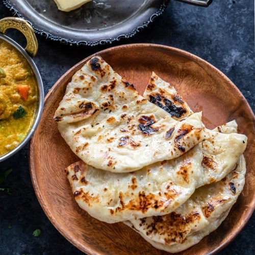

Naan

Naan is a leavened, oven-baked or tawa-fried flatbread which
is found in the cuisines mainly of Western Asia, Central Asia,
Indian subcontinent, Indonesia, Myanmar and the Caribbean.
Ingredients
- All purpose flour
- Sugar
- Baking powder
- Baking soda
- Salt
- Yogurt
- Oil
- Lukewarm water
- Butter
- Coriander leaves
Steps
- Firstly, knead the dough for 10 minutes with ingredients listed for dough
- Cover with a moist cloth and rest for 2 hours in warm place
- After 2 hours, knead the dough slightly. to remove if any air present in the dough.
- Pinch a ball sized dough
- Gently roll to oval shape using rolling pin. make sure you do not make too thin nor thick. and also keep the size in mind. it should not be larger than your tawa size
- Grease with water over naan
- Furthermore, slowly flip over and put it on hot tawa and slightly press
- Now after a minute, flip the tawa upside down and cook naan directly on flame till they turn golden brown
- Also brush with some butter mixed with coriander leaves.
- Gently scrape the naan from bottom and remove
- Finally, serve butter naan hot with your favourite curry like mattar paneer